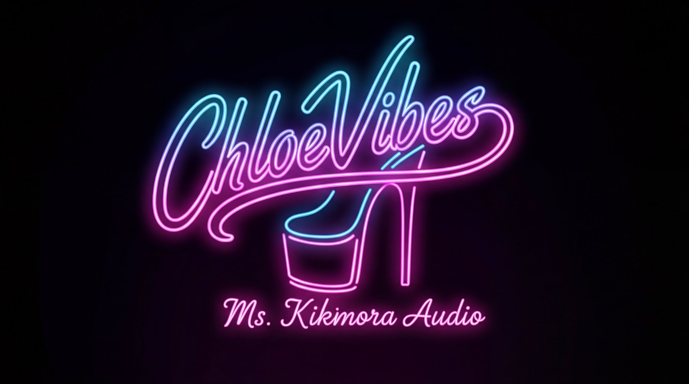
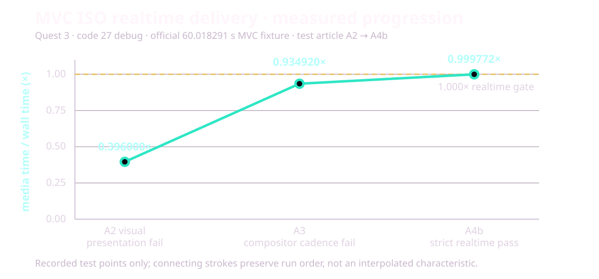
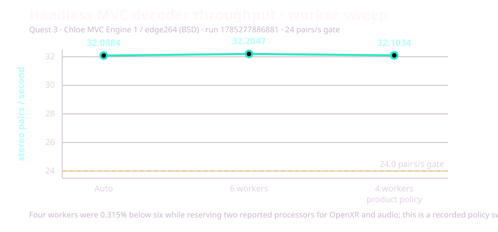
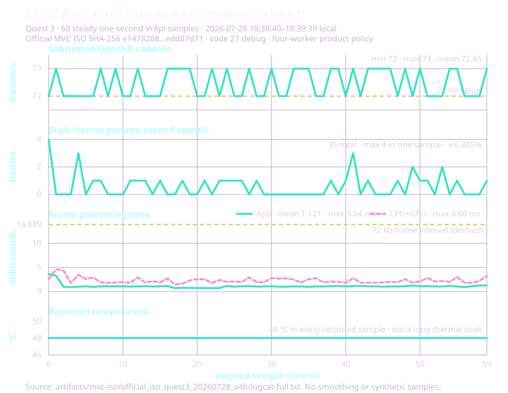
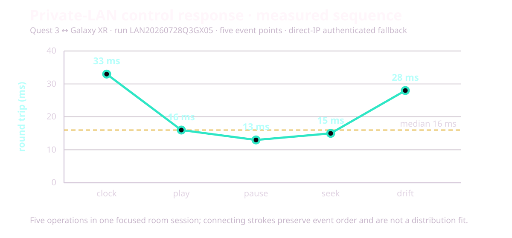

Point the laser. Pull the trigger. That's most of Finally.
Read the installed version in the Club. This page documents the signed internal 0.3.31-m3 candidate — Quest code 37 / Galaxy code 10037. It does not claim that either store has delivered that build. Store releases can lag this manual, so the version shown inside your headset remains the authority.
Installed identity
How this manual applies
Quest · 0.3.31-m3 · code 37
Current candidate behavior. The signed artifact, unit/lint/build gates, exact direct-build install, and launch passed. Final on-head acceptance of every code-37 change remains separate.
Galaxy XR · 0.3.31-m3 · code 10037
Current shared controls and source behavior. The signed APK/AAB and local validation gates passed; this exact candidate was not physically rerun on Galaxy XR.
Any build below 0.3.31-m3
Use only controls present in that installed build. The Engineering Receipts appendix retains older device measurements as historical evidence, not as proof of code 37.
Any other version
Use this as orientation, then follow that build's in-headset HELP and release notes. A control described here may be absent or changed.
Two reading lanes: Start here through Bug reports is Daily Use. Engineering Receipts, Theory of Operation, and Deeper are optional appendices; you do not need them to set up a source or watch a title.
The vault is your library. Open a folder to dig in. Open a title to play. Daily browsing and playback stay in VR; source management, document pickers, delete confirmation, and Watch Together can intentionally open Android's flat or system UI.
Your first hour. Finally ships no catalog, so an empty vault is normal. The fastest first frame is one known-good file in Movies/Finally, followed by ↻ SCAN. Add one Android folder or one SMB share next; use Browse instantly on a large NAS instead of waiting for a whole-library index. Posters and metadata can continue filling in after playable rows appear.
Input
What it does
B / Y
Menu / Back is B by default or Y after the optional swap. In a video: quick strip → full cockpit → hidden — never exits the app
Trigger
Click what you point at · summon the quick strip while playing
A
Play / pause
Stick ← →
Seek a video · step through photos
One-controller law. Everything critical in Finally works with one tracked controller. Left-controller buttons are conveniences, never requirements.
First-run missing-file check: a whole-word mono filename tag intentionally hides that title from the vault and 2D library; the footer reports N MONO hidden. Kimono and Monolith do not match, and a title with saved settings is never auto-hidden. Rename the file to show it again.
02 · first run
Guided tutorial
Six skippable cards get you from first launch to a correctly placed picture.
Practice pointing and pulling the trigger on the real target.
Learn where local folders and SMB shares enter the vault.
Move flat content with the physical scene dolly.
Repair projection, stereo packing, and eye order.
Find Dark room, subtitles, and automatic frame-rate matching.
Choose SIMPLE or PRO and start using Finally.
SKIP TUTORIAL and START USING FINALLY both record completion. System Back leaves it incomplete, so it can return after a cold start. Replay it whenever you want from SOURCES → Quick-start tutorial.
Private by construction. The tour is local, needs no account, and sends no completion telemetry. Quest 3 and Galaxy XR physically rendered all six steps and passed practice/forward/back assertions; those tests deliberately did not press Finish, so a complete human walkthrough remains a separate check.
daily use · quick answers
Daily-use FAQ
Question
Current answer
Can I watch while lying on my side?
Yes. In PRO → SETUP, Tilt follow keeps the picture upright to your face, while Menu level keeps the cockpit gravity-level. The menu and laser remain world-anchored.
Can I use bare-hand tracking without controllers?
Tracked controllers are the supported baseline. Quest does not request the hand-tracking feature. On a platform that exposes its system hand ray/pinch as the OpenXR select action, visible targets may respond—Galaxy XR has user-observed hand-ray use—but grip/stick gestures, menu grabbing, shortcuts, and haptics still require a controller. A complete hand-only matrix is not claimed.
What happens if I remove the headset or switch apps?
Playback pauses so audio does not keep leaking through the speakers, and Finally checkpoints the current resume position. Return to the app and press Play when you are ready.
Can I choose another audio track?
For ordinary ExoPlayer-backed containers, AUDIO cycles supported embedded tracks. The shared AUDIO cycle is disabled for prepared ISO/SSIF playback. Finally does not invent a missing dub or ask Plex to transcode one.
Can I load an external subtitle file?
Yes. Start an ordinary video, open the quick strip or PLAY page, and choose LOAD SUBTITLE. Pick an SRT, VTT, ASS, or SSA file up to 4 MiB. This works with local, SMB, Plex, WebDAV, FTP, Stash, and DLNA video routes; stills and the special ISO/MVC path are excluded.
Does Finally support ChloeVibes or .funscript files?
Yes in code 37 / 10037. ChloeVibes is integrated into Finally, so no second app is required. Open GLOBAL SETTINGS → CHLOEVIBES, connect and explicitly ARM a compatible Bluetooth accessory, then use a readable sidecar with the same complete basename as the video. See ChloeVibes haptics.
What happens to surround audio?
Finally keeps up to eight-channel tracks eligible, uses headset hardware when available, and falls back to its bundled FFmpeg audio path for AC-3, E-AC-3, and DTS when needed. Android's audio system performs the headset downmix.
Are chapters supported?
Authored Blu-ray playlist marks expose ◀ CHAPTER / CHAPTER ▶ when present. The code-28 resume-plus-authored-seek route physically passed on Quest and remains a historical receipt; regular-container chapter UI and DVD menu navigation are not broad claims for code 33.
Does HDR work?
A focused 1080p60 AV1 Main 10 HDR10 file reached the hardware decoder and recovered after seek on Quest 3 and Galaxy XR. That is decode-path proof, not a blanket HDR tone-map, output-accuracy, 4K/8K, or every-profile guarantee.
Can Finally cast the movie?
Finally has no in-app Chromecast, host relay, or cloud-casting service. Headset-system casting or recording, when the OS offers it, is outside Finally's media path. Watch Together synchronizes two local copies; it is not casting.
How much battery does it use?
There is no honest hours estimate: codec, resolution, bitrate, Wi-Fi, display mode, and headset firmware dominate. Bench runs were externally powered, so no controlled drain series is claimed. Check the headset battery for long or high-bitrate sessions.
Will progress survive a move or rename?
Readable, seekable local media with a known size of at least 64 KiB can rematch the same bytes by content hash, and *.finally.json sidecars can travel with a title. A move between source types or servers can become a new identity, so keep the sidecar with the title when the transfer matters.
Can I use removable storage?
Use Add videos folder or Add files and grant the volume through Android's picker when the OS exposes it. A removed/re-mounted volume can need a fresh grant. USB optical DVD is a separate, narrower Quest path.
03 · muscle memory
Controls
The full map. B is Menu / Back by default; the optional B/Y swap moves that role to Y.
Action
Input
Menu / back
B by default, or Y after the optional swap. In the lobby it backs out through search, folders, and panels; during video it cycles strip → cockpit → hidden; a photo uses the full cockpit (see The Cockpit)
Click / confirm
Trigger on a visible target. With playback panels closed, Trigger opens the quick strip
Play / pause
A
Mute
Grip + A
Seek
Stick ← → (either hand) · on a photo: previous / next file
Zoom (immersive)
Stick ↕ with the menu closed · range 0.5×–2.6×
Flat: distance
Stick ↕ — a physical dolly. Flat video is an object in your room, never a FOV trick
Flat: window size
Grip + Stick ← → — shrink / enlarge in place
List navigation
Stick ↕ with the menu open
Grab-scroll the vault
Hold Trigger on the list and drag — release with speed to coast (see The Club)
Prev / next title
Grip + Stick ↓ / ↑
Drag the world (dome)
Hold Grip, then pull that same hand's Trigger and drag — grab-the-world
Dome dolly (VR180 / fisheye)
Stick ↕ — push forward leans the scene closer. True translation, not optical zoom
Full reset
Stick click — zoom 1×, distance home, height and drag zeroed, content on gaze
Eye swap
Y by default, B after the optional B/Y swap — also the Eyes cell on PLAY
Move the menu panel
Point at it + hold Grip + move your hand
Menu pull / push
While grip-holding: Stick ↕ slides it along the ray
Resize the menu
While grip-holding: Stick ← →
Controllers, precisely: bare-hand tracking is not enabled. One tracked controller can point and trigger every critical visible Club and cockpit target, including PRO CONTROLS on the quick strip. A, the Menu / Back face button, grip/stick gestures, and controller hover/click haptics remain controller inputs. Optional ChloeVibes accessory motion is a separate explicitly armed system described under ChloeVibes haptics. The saved B/Y swap moves Menu / Back to left-hand Y and stereo packing to B; eye swap also has a visible menu control.
What the stick means right now
Current mode
Stick input
Result
Menu or HELP open
↑ ↓
Scroll the current list or article
Video · menu closed
← →
Seek backward or forward
Immersive video · menu closed
↑ ↓
Zoom; on VR180/fisheye, dolly the dome closer or farther
Flat video · menu closed
↑ ↓
Move the screen physically closer or farther
Photo
← →
Previous or next file
Grip-holding the menu panel
↑ ↓ · ← →
Pull/push the panel · resize it
Not panel-holding
Grip + ↓ / ↑
Previous or next title
Context wins: panel-holding takes precedence, photos repurpose horizontal seek for album navigation, and the ordinary closed-video map applies otherwise.
Haptics: a hover tick and click pulse on the pointing hand. The SETUP master toggle remains, and a saved HAPTIC STRENGTH slider scales later pulses from OFF to 100%. Quest defaults to 100%; Galaxy XR defaults to 55%. Hard rule: grip away from the panel does nothing — no accidental grabs.
Galaxy XR note. Quest binds the full Touch controller profile. Galaxy XR runs the same map through the standard controller profile — laser, trigger, menu, and transport all behave identically.
04 · the lobby
The Club
♡ FINALLY CLUB — your vault, floating in a neon room (or your real one).
The Club is where you land. Titles list in the center; favorites wear a ★; folders glow gold. Aim and trigger to open anything.
The chip row
Chip
What it does
▲ PREV▼ MORE
Page the root vault; the lower chip changes to ▼ END on the last page — or just grab the list itself (see below)
↻ SCAN
Rescan your sources for new files — including your saved NAS share, so server-side additions land without leaving VR
⌕ SEARCH
Open the in-headset keyboard and search displayed titles—including Stash filename fallbacks—without leaving the Club
RANDOM
Play a no-repeat random local video. Network, still, audio, missing, and unavailable rows stay out of the deck
SORT
Cycle the eight saved folder orders: A-Z, Z-A, NEW, OLD, BIG, SMALL, LONG, SHORT
DELETE
Permanently delete the selected validated local video after an exact-file confirmation; network, folder, disc, ISO, and cloud targets are refused
WATCH
Open private-LAN Host / Join pairing (see Watch Together)
◎ ROOM
Passthrough — the vault floats in your real room. Saved as your default
✦ WORLD
Open the responsive ROOMS grid and select a bundled or user room directly (see Worlds)
ROOM DIM
Cycle saved background brightness through 100 / 75 / 50 / 25 / 0%; media, subtitles, and UI remain unchanged
★ FAV
Pin the selected title to favorites
Search a large vault
Choose ⌕ SEARCH, type with the controller-first keyboard, and apply the query. Search is case-insensitive, every word must appear somewhere in the displayed title, and the resulting rows keep the active sort order. Untitled Stash scenes are searchable by their filename fallback. Press Menu / Back—B by default or Y after the optional swap—to close the editor or clear an applied search before the normal folder-back action continues.
Grab the list
The vault scrolls like a phone list. Grab it with Trigger and drag — past a small threshold of travel the press becomes a scroll instead of a click, so aiming at a row and squeezing still just opens it. Release while moving and the list coasts, bleeding off speed like a flick on glass, with a hard stop at each end — no bounce. A press while it's coasting catches the list: it stops under your laser, and releasing never fires the row it happened to land on.
When the vault overflows, a slim scroll bar rides the right edge — a dim neon thumb sized by how much of the list you're seeing. Point at it and drag for an absolute jump, or tap anywhere on the track and the thumb lands under your laser. The root-vault ▲ PREV / ▼ MORE chips (ending with ▼ END) and stick ↕ still work; they're just no longer the only way.
One honest line while we're here: every list now reaches its final entries — earlier builds carried a capacity bug that hid the last two rows of any overflowing list. 0.3.14 fixed the math.
Posters on the rows
Every local title wears a poster — one real frame pulled from ~10% into the video, past the black leaders and intro cards, cached so the vault paints instantly next time. Stereo-packed files are cropped to a single eye first, so a poster is never a double image. Rows still loading show a quiet glyph — and NAS and Blu-ray ISO rows keep the glyph on purpose: pulling megabytes over the network (or spinning up the whole disc stack) just to decorate a list is how library screens start stuttering. The 2D library rows wear the same posters.
Who gets hidden
Files that auto-detect as plain mono — a whole-word mono tag in the filename — are tucked out of the vault and the 2D library, with an honest count in the vault footer: N MONO hidden. Two rules keep this safe: the detector matches whole tags only (Kimono and Monolith never vanish), and a title with your saved settings is never auto-hidden — your choices always beat the detector's. The tag is the switch: rename the file and it's back.
Sort a folder
The flat Library has a Sort picker; each Club press of SORT advances the same saved choice. Favorites remain pinned and folders remain above videos. Missing size, duration, or date values sort last in either direction, and stable tie-breakers prevent rows from jumping during refresh.
Large-library repair in code 32 and later: A-Z and Z-A now obey the full comparator contract even across thousands of Plex rows. Finally rebuilds the view before saving a new sort choice, so a failed rebuild cannot poison the next launch. The repair keeps the existing library index, Plex source, and credentials.
Club chip
Order
Club chip
Order
A-Z
Name, ascending
Z-A
Name, descending
NEW
Date added, newest
OLD
Date added, oldest
BIG
Size, largest
SMALL
Size, smallest
LONG
Duration, longest
SHORT
Duration, shortest
“Date added” means when the item entered the Finally vault, not necessarily its filesystem modification date.
Delete one local video
Focus one local video and choose DELETE.
Read the exact-file confirmation.
Choose Delete file; Android may show its own final consent surface.
Finally reloads the vault row and root before deletion so a stale selection cannot redirect the action. It fails closed for SMB, FTP, WebDAV, Plex, Stash, folders, DVD, ISO, cloud/server rows, traversal paths, missing roots, or a target that no longer matches the selection. A successful delete is permanent. Clear vault only removes Finally's records and never deletes the media.
Setup from the Club
⚙ SOURCES opens the in-room source status and rescan panel. Choose MANAGE when you need the flat Library setup screen, Android pickers, or server forms; Quick-start tutorial replays the guided tour. Lobby GLOBAL SETTINGS holds menu level, resume, skip intro, tilt follow, stick direction, seek step, Seek landing (FAST ⇄ EXACT, see Seeking), NAS buffer (LEAN · DEFAULT · BIG · MAX, see Sources & NAS), cockpit Menu style (SIMPLE ⇄ PRO), and the dedicated CHLOEVIBES control entry. The same GLOBAL SETTINGS tab is reachable during playback, where it exposes the HAPTIC CONTROL PANEL. 📖 HELP opens help in-headset with no title required.
Android's flat or system UI appears only for tasks that need it: source management and folder/document pickers, the external-subtitle picker, local-file delete confirmation, and Watch Together setup. Return to the Club when that task finishes.
LEAVE exits to your headset home — labeled LEAVE → QUEST on Quest and LEAVE → HOME on Galaxy XR. On the empty first run, open ⚙ SOURCES, or drop files in Movies/Finally and use ↻ SCAN.
05 · while playing
The Cockpit
Press Menu / Back—B by default or Y after the optional swap—during playback: quick strip first, full cockpit second, gone third.
The Menu / Back cycle
While a video plays, the Menu / Back button—B by default, Y after the optional swap—walks a three-step cycle: nothing open → quick strip → full cockpit → hidden. The strip spawns low, below your eyeline — a glance down, not a wall of controls in your face. A second press grows it into the full cockpit in place; a third puts everything away. A bare Trigger pull summons the strip too, so the common moves are always one squeeze away.
Photos skip the strip — Menu / Back opens the full cockpit directly, because transport means nothing to a still. In the lobby, the same button backs out through panels and folders before hiding the root vault.
The quick strip
The strip carries the moves you actually make mid-video: the timeline scrubber, -30s / -5s / PLAY / +5s / +30s (the small step is adjustable in SETUP), ■ STOP, speed, volume, mute, PREV / ◆ CLUB / NEXT, ◀ CLOSER / FARTHER ▶, and ◎ ROOM. In SIMPLE mode, point and trigger the always-visible PRO CONTROLS target to promote the strip into the full cockpit without another Menu / Back press. In PRO mode the strip adds A·B·C·D loop chips and ◎ STATS. If a network stream stalls, it raises itself with a REBUFFERING banner and stands back down when the flow recovers — details in Sources & NAS.
SIMPLE and PRO
The full cockpit ships in SIMPLE mode: four tabs — PLAY · VIEW · GLOBAL SETTINGS · HELP — with the essentials. PLAY keeps the transport, speed, volume, mute, Eyes, passthrough, PREV/NEXT, and the core lens row (AUTO · VR180 · VR360 · Flat · SBS · OU). VIEW keeps scene height, distance, zoom, and screen curve, plus the resets and the AUTO escape hatch.
Tap the PRO chip in the tab row and the full six-tab cockpit unlocks; BASIC brings SIMPLE back. Your choice is saved, and it is also flippable from lobby GLOBAL SETTINGS → Menu style. SIMPLE hides the pro tools — A–B loops, the MKX/FE190/VRCA lens profiles, the chroma/alpha keying suite, and fine placement sliders — but GLOBAL SETTINGS and HELP stay reachable in both modes.
Area
SIMPLE
PRO
Tabs
PLAY · VIEW · GLOBAL SETTINGS · HELP
PLAY · PLACE/EYES · COLOR/KEY · SETUP · GLOBAL SETTINGS · HELP
The same core row plus MKX, FE190, VRCA, and fine placement
Loops and live stats
Hidden
A–B–C–D loop controls and Stats HUD
Color and keying
Hidden
Color grade, four-color chroma key, and packed alpha
Switch modes
PRO/BASIC in the tab row, or lobby 🎛 SET → Menu style; the choice is saved
The six PRO pages:
PLAY
The transport. Timeline scrubber, -30s / -5s / PLAY / +5s / +30s, ■ STOP, ◆ CLUB to return to the lobby, speed, volume, mute, Eyes (L·R ⇄ R·L), the preset AUTO/MANUAL toggle, passthrough, A·B·C·D loop marks, PREV/NEXT, and the quick lens row (VR180 · VR360 · Flat · SBS · OU · AUTO).
SBS and OU are toggles: press the lit one and the title drops back to 2D — the lit cell even says so: again = 2D. Stereo always has a one-press exit, in SIMPLE and PRO alike.
PLACE / EYES
Where the scene sits and how your eyes meet it. Sliders for scene height, move scene (left/right), distance, zoom, depth position (stereo convergence), eye height align, scene tilt, scene roll, and screen curve (flat titles only — 0 to ~100° of cylindrical wrap, saved per title). Plus flip left/right, flip up/down, Reset place + eyes, and the full manual lens row — see Lenses.
These sliders are live twice over: every cockpit slider repaints while your trigger drags it, and tilt, roll, zoom, and distance also follow the grip and stick gestures in real time — roll the dome with your wrist and SCENE ROLL moves with you, instead of showing a stale value that later snaps the scene back.
COLOR / KEY
A full color grade: brightness, contrast, gamma, saturation, hue, and warmth — six proper sliders with a one-tap Reset. The grade touches the video only (the menu panel stays neutral) and starts clean each session. That reset is deliberate: grade is a temporary viewing correction, not per-title metadata, so a fix for one session cannot silently tint later content or diagnostics. Projection, placement, and resume remain sticky where documented; grade does not. Below them, the entire passthrough keying suite: master passthrough toggle, packed-alpha matte, four-color chroma key with per-color edge controls. Detailed in Your room.
SETUP
Seek step size, menu distance and size, theme, menu spawn (at gaze or fixed origin), default-SBS-for-180 toggle, skip intro, resume on/off, stick zoom direction (pull = smaller by default, flippable), wrist-roll dome tilt, the haptics master plus saved OFF–100% strength, subtitle delay and size, and the Stats HUD toggle — plus the lying-down suite: tilt follow rolls the picture with your head so it stays upright to your face instead of the room (lie on your side; the movie comes with you — menus and laser stay world-anchored), and menu level makes the cockpit spawn gravity-level instead of matching your head tilt.
Subtitles
SUBS cycles OFF and the tracks exposed by the current container. Embedded tracks say EMBEDDED; sidecars and manually selected files say FILE. Ordinary local and SMB videos can automatically discover sibling .srt, .vtt, .ass, and .ssa files that share the complete video stem, optionally followed by a language label.
LOAD SUBTITLE on the quick strip and PLAY page opens Android's document picker during ordinary video playback. Choose an SRT, VTT, ASS, or SSA file up to 4 MiB for a local, SMB, Plex, WebDAV, FTP, Stash, or DLNA title. Finally copies the selection into private cache, rebinds the same movie, selects the new FILE track, and resumes only if it was playing before the picker opened. The original URI is not persisted or logged, and the attachment lasts only for that playback session. Stills and the special ISO/MVC route do not offer this control.
In PRO → SETUP, Subtitle look cycles saved CINEMA, CLEAN, and HIGH CONTRAST styles; Sub delay spans −10 to +10 seconds and Sub size spans 60% to 180%. There is no independent subtitle-depth control. The ISO route reports SUBS · ISO N/A because text and PGS rendering are deliberately disabled there.
Dark room, ROOM DIM and AFR
DARK ROOM gives flat movies a plain black surround; ROOM VISIBLE restores passthrough. ROOM DIM is a saved 0–100% background-luminance slider in 5% steps. It dims bundled/procedural rooms, the flat-video background, and passthrough—including what shows through chroma/packed-alpha holes—without dimming the movie, still, subtitles, or cockpit UI. Automatic frame-rate matching sends Android a seamless display-rate hint based on normalized source cadence and playback speed. The headset still chooses the final display mode. AFR is not frame interpolation: it never invents motion or converts a low-frame-rate file to 60 or 90 fps.
HELP
The in-headset version of this manual: subjects on the left, article on the right, stick ↕ scrolls. It also includes two extra chapters — THEORY (teal) and DEEPER (green). Both are reproduced below in full: start with Theory of Operation, then enter Deeper.
Stats for nerds
PRO only. Tap ◎ STATS on the quick strip's header (or PRO → SETUP → Stats HUD) and the strip's lower half becomes a live readout: source class, video codec with resolution @ fps, decoder and dropped frames, audio codec, color info, buffer seconds against target, NAS fill % with live MB/s, position / speed / state, active lens + stereo, current Android display mode, source cadence, target refresh, and cadence multiple. It refreshes once a second while open, the scrubber and transport stay live above it, and it never appears on photos.
Readout
Exact meaning
72.0 Hz LOCKED
Android currently reports 72.0 Hz and it is an integer multiple of effective content cadence within 0.5%
72.0 Hz · TARGET 90.0 Hz · NOT LOCKED
90 Hz is a compatible requested/supported target, but Android still reports 72 Hz
CADENCE 3:3
Each content frame can occupy three display refreshes
CADENCE MISMATCH
The reported display rate is not an integer multiple
CADENCE UNKNOWN
The stream did not provide a usable frame rate
For example, 23.976-fps cinema at a reported 72 Hz qualifies as a 3:3 lock. LOCKED never means “requested” or merely “supported.”
Nothing decorative. A cockpit toggle must never be a placebo — if a switch is visible, it does something real. That's a design law, not a promise.
05A · optional accessory control
ChloeVibes Haptic Control Panel
ChloeVibes is built directly into Finally. There is no second app to install or keep running.

Local media timing, local Bluetooth control. Finally reads a matching .funscript and talks directly to the compatible accessory you choose.
Research lineage. The broader ChloeVibes program was developed by David Lombardo with particular emphasis on ADSR (Attack, Decay, Sustain, Release) haptic envelopes: shaping tactile response over time instead of treating a motor as a blunt on/off switch. See the ChloeVibes ADSR technical reference. Finally's current sidecar path follows the authored .funscript plus the safety gates below; it does not claim to run ChloeVibes' complete live-audio ADSR engine.
Connect and arm
In the Club, open GLOBAL SETTINGS → CHLOEVIBES.
Choose SCAN. Android may ask for Nearby Devices / Bluetooth permission the first time.
Select and connect the intended accessory, confirm its displayed name, and set TOY STRENGTH.
Choose ARM only when you are ready for accessory output.
Play a video with a readable sidecar that shares its complete basename: Movie.mp4 matches Movie.funscript.
During playback, open GLOBAL SETTINGS → HAPTIC CONTROL PANEL for connection/script status, STOP, ARM / DISARM, TEST, and strength. TOY STRENGTH controls the accessory; controller HAPTIC STRENGTH remains a separate setting for menu hover/click pulses.
STOP and bounded TEST
STOP is immediate and does not require the panel to be armed. Use it whenever output is unexpected, then physically disconnect the accessory before troubleshooting.
TEST requires an already connected and armed accessory. It emits exactly one 300 ms pulse, then automatically sends STOP and DISARMS. Repeated presses cannot stack pulses or extend the safety window, and TEST is unavailable while ordinary playback owns accessory output.
Pause, buffering or lost playback ownership, leaving the player, disconnecting the accessory, or closing the session invalidates motion and follows the stop/disarm safety path.
Private by design
Bluetooth scan results, accessory identifiers, connection state, and .funscript timing stay on the headset. Finally does not send that information to Coldbricks and uses no ChloeVibes cloud backend.
06 · the projection brain
Lenses & projection
Filenames hint the shape. Untagged files use the real frame geometry. Your fixes stick per title — forever.
Every VR video is a flat rectangle of pixels that has to be wrapped back into a world. Get the wrap wrong and the scale, depth, and edges all lie to you. Finally reads the filename, checks the frame, picks a projection — and when it can't know, gives you manual overrides that persist.
The lens family
Lens
FOV
What it is
VR180
180°
Equirectangular half-dome — the standard stitched VR180 format
VR360
360°
Equirectangular full sphere
FISHEYE
180°
Plain circular fisheye disk — unstitched lens image
FE190
190°
190° fisheye — SLR originals and the Canon lens family
MKX200
200°
SLR MKX lens (plus a RAW variant)
MKX220
220°
Wider MKX lens
VRCA
220°
VRCA lens correction
Flat
—
A 2D panel in your room — optionally curved, never warped
180 vs 190 — yes, they're different. Same fisheye disk, different lens coverage. A 190° file played on a 180° mesh looks subtly zoomed-in with warped edges; the reverse looks shrunken. When something's off but you can't name it, audition the lens row.
Canon RF 5.2mm dual-fisheye (rf52) exports are treated as stitched VR180 — Canon's EOS VR Utility outputs equirect, so that's where those files belong.
FULL versus HALF stereo packing
Choice
Use it for
FULL SBS
A wide frame containing two full-width eye images side by side
HALF SBS
A normal 16:9-style 3D movie frame with the two eyes squeezed side by side
FULL OU
A tall frame containing two full-height eye images top/bottom
HALF OU
A normal-height 3D movie frame with the eyes squeezed top/bottom
Choose the packing that matches the file. Tap an active stereo choice again for mono/2D; AUTO returns control to detection. If depth looks inverted, swap eyes instead of changing FULL to HALF.
Flat-screen aspect repair
For a FLAT title, use ASPECT only after stereo packing is correct. It cycles AUTO → 16:9 → 4:3 → 2:1 → 2.40:1 → 1:1 → 9:16. AUTO uses decoded geometry, pixel-aspect ratio, and packing. A fixed value changes screen shape after eye unpacking; it does not change eye order, lens, projection, or AUTO/MANUAL detection. ASPECT is intentionally disabled for VR180, VR360, and fisheye projections.
When there's no tag at all
A filename tag is a promise, and Finally keeps it — tagged 180 files keep the ecosystem's SBS convention. An untagged file gets a much more careful guess: the frame is only eye-split when halving it actually yields two roughly square eyes (the classic 2:1 full-SBS dome). Portrait video is never VR. An ultra-wide frame (32:9-class) resolves to a flat 3D SBS screen — that shape is a movie pack or a monitor capture, never a hemisphere. And an odd, non-standard aspect plays mono instead of being torn in half — a wrong mono is watchable; a wrong eye-split is soup. Your manual override still beats everything.
AUTO, MANUAL, and the consent card
Finally's override system exists to kill a disease other players have: silently forgetting your fixes, or silently fighting the filename. The rules:
AUTO (default): identity is re-derived from the filename and frame every open — detector improvements and renames stay live.
The first big manual change on a tagged file asks once: OVERRIDE(manual settings for this file) or KEEP AUTO(follow the filename preset).
Choose OVERRIDE and your settings beat the filename forever — surviving reopens, rescans, and app updates.
AUTO leads both lens rows as the escape hatch — one tap hands the file back to the detector. Nobody gets trapped in MKX land.
07 · reference
Filename tags
Deo-compatible and then some. Tags are case-insensitive; separators are _ - . space ( ) [ ].
Projection / lens
Tags
Result
180vr180180x180
VR180 equirect
360vr360
VR360 equirect
fisheye
Fisheye 180°
fisheye190fe190
Fisheye 190°
mkx200 · mkx200raw
MKX 200° (raw variant kept distinct)
mkx220
MKX 220°
vrca220vrca
VRCA 220°
rf52rf5.2canonrf52dualfisheye
Stitched VR180 (Canon workflow)
flat2d
Flat panel
fb360
VR360 (Facebook spatial-audio marker)
Stereo packing
Tags
Result
sbslr3dhsidebyside
Side-by-side
rl
SBS with swapped eyes (Deo convention: right eye in the left half)
outbtab3dvoverunder
Over-under
bt
Over-under, swapped eyes — unless it's sitting next to a colorimetry token like bt709 / bt2020, which don't count
hsbshalf-sbs · houhalf-ou
Half-width / half-height variants
mono
One image to both eyes. Whole-token only — Kimono and Monolith are safe
Untagged fisheye-family files default to SBS — that's how the ecosystem ships them.
Extras
Tags
Result
_alphapassthrough
Passthrough hint — arms the packed-alpha / chroma path
flipfliph · flipv
Horizontal / vertical flip
08 · your library
Sources & NAS
Local folders and SMB are first-class. The current candidate also has nearby SMB/DLNA discovery plus bounded FTP, WebDAV, Plex, Stash, DLNA, and direct-link paths.
The zero-setup path
Drop files into Movies/Finally on the headset and hit ↻ SCAN. Done.
Folders and files
The 2D library (reached via FOLDERS) adds any folder with ＋ Add videos folder — and it chains: Android's picker grants one folder per round, so after each scan lands Finally asks "add another?" and relaunches the picker until you're done. Two taps per extra folder, not a hunt for the pill. ＋ Add files is multi-select — long-press or tap several in the system picker and they land together, each checked for compatibility, with one summary at the end. Sidecar import/export lives here too. Clear vault removes library rows only — it never deletes files on disk or NAS.
Find nearby sources
In the 2D source-setup panel, choose 🔎 FIND NEARBY SOURCES. Finally runs a bounded Wi-Fi search and labels results honestly as SMB SERVER or MEDIA SERVER. A discovered DLNA/UPnP server can prefill its setup and browse path. A discovered SMB host prefills the address; you still sign in and choose a visible SMB2/3 share when the server permits enumeration, or type the share name manually. Results stay in first-seen order so a row cannot jump away from a controller press. Manual SMB and DLNA entry always remain available when a router, firewall, VPN, or server blocks discovery.
NAS / PC share (SMB)
Finally treats SMB2/3 as a first-class library source — stream straight off your PC or NAS over Wi-Fi, no copying.
On your computer, share a folder (Windows: Properties → Sharing).
Put some videos in that folder.
Note the PC's local address (shown here as NAS_IP) and the share name (for example Media) — not the full path.
Headset and PC on the same Wi-Fi / home network.
Turn off any VPN on the PC if connect fails.
Then: 2D library → ＋ Add NAS share → host, share name, optional Folder (for example media/vr), username + password, and normally port 445. Accepted address forms include a hostname, local IPv4, UNC path, or smb:// address. Put the Synology Shared Folder name in Shared folder and any File Station subfolder in Folder.
Press Test first. It signs in and lists one folder without recursively walking the source. Then choose Browse instantly for an immediate folder snapshot or Index entire source for resumable background discovery. Browsing does not wait for a 45-TB share to finish indexing. Credentials stay on the device in source-specific protected storage and are never exported in library metadata.
Share name, not path. The most common connect failure is typing C:\Media where the share name goes. Use the short name only. Second most common: a VPN on the PC eating local discovery.
Big files welcome. Finally range-streams multi-GB videos over compatible SMB2/3 servers instead of loading the whole file. Version 0.3.9 fixed a specific large-offset failure that could stop titles beyond 2 GiB; sustained playback still depends on the server, Wi-Fi, bitrate, and exact media stream.
What the scan tells you
Scans report what they skipped instead of silently dropping it. Large recursive scans run in deterministic bounded pages and retain a continuation token, so interruption or retry does not force a restart. If a page, depth, or budget boundary is reached, the report says the index is incomplete and names the remaining/blocked areas rather than pretending the source is complete. A retained deterministic regression covers 54,321 files in 3,400 folders across three resumable pages; that is a host-test boundary, not a promise about every NAS or router. NAS housekeeping folders (@eaDir, #recycle, dot-folders and their cousins) are pruned by design, and one locked folder does not kill the rest of a scan.
Network scans also skip music album art automatically (cover.jpg, folder.jpg, fanart, and any thumbnail-sized still) — a share with a music library won't flood your vault with sleeve scans. Folders and files you pick directly keep every image you chose — even one named poster.jpg: locally, only thumbnail-sized files (under 256 KB) are skipped, a file whose size can't be read is never filtered, and the name-based art net stays NAS-only.
Rescan without leaving VR
The vault's ↻ SCAN re-walks your saved NAS share along with the local sources. Dropped new files on the server mid-session? One chip, headset stays on, and they're in the vault.
The NAS buffer
Lobby 🎛 SET → NAS buffer cycles LEAN · DEFAULT · BIG · MAX — how far a network stream reads ahead of playback. Bigger rides out longer Wi-Fi dips before the REBUFFERING banner would ever appear; the cost is more memory and cache space on the headset. DEFAULT is the shipped profile. The setting applies from the next title you open — a title already playing keeps the buffer it started with.
The network reservoir pipelines bounded read-ahead, coalesces short server reads, cancels in-flight work on close, and handles far seeks without unbounded hot memory. Its deterministic jitter gate consumes one second at 150 Mbps and then performs a far seek inside the configured caps. That proves the buffer logic, not that a particular Wi-Fi link or spinning disk can sustain 150 Mbps.
When the stream stalls
NAS playback narrates itself. While a network title loads, the vault shows a real buffering percentage — the actual readahead fill, not a spinner. If the stream stalls mid-play, the quick strip raises itself with a REBUFFERING banner and hides again once the flow recovers. In Stats HUD, compare sustained live MB/s against content bitrate: a negative margin predicts repeated buffering even when a short speed test looks fast.
If a video can't play at all, the reason lands on the vault panel as a bold amber alert band, in plain language: corrupt file, unsupported codec, no permission, file missing, or "NAS stopped responding." A server that's connected but frozen is declared dead in about 20 seconds — no eternal hourglass. A network that drops out entirely gets a ~45-second self-heal window: Finally keeps reconnecting, and if the network comes back in that window, playback resumes by itself.
FTP, WebDAV, Plex, Stash, DLNA & direct links
Source
Current boundary
FTP
Passive binary FTP on a trusted LAN. Plain FTP is unencrypted; no FTPS/SFTP, ISO, thumbnails, or sidecar subtitles
WebDAV
Configure, validate, browse, index, and range-read a user-supplied collection. Code 33 can follow a bounded HTTPS media handoff while preserving Range and stripping source credentials at a new origin; malformed or ignored ranges still fail closed
Plex
Direct Play the original Part from a user-supplied local server and token; no transcoding request, cloud login, or hosted relay. Large libraries retain all eight safe sort modes
Stash
Page scenes and open native stream identities from a server/API key you supply. Display order is nonblank scene title → sanitized filename → opaque scene-ID fallback; Finally supplies no catalog
DLNA / UPnP
Discover or manually add a trusted-LAN MediaServer, browse its ContentDirectory, and range-read compatible media. Server behavior varies; no Internet discovery, transcoding, or universal DLNA claim
Play link
Compatible direct HLS, DASH, SmoothStreaming, or RTSP media; not a general browser and does not bypass login, DRM, cookies, or blob-only page logic
Six short setup recipes
Nearby: Sources → Find nearby sources. Select an SMB server or DLNA media server to prefill the appropriate setup form; use manual entry if nothing answers.
FTP: Sources → Add FTP server. Enter a name, host/IP, port (normally 21), server folder, username, and optional password; choose Connect & scan. Use only passive plain FTP on a private LAN.
WebDAV: Sources → Add WebDAV. Enter the full collection URL plus username/password, then Connect & scan. Prefer HTTPS; acknowledged HTTP is limited to a trusted private address.
Plex: Sources → Add Plex. Enter the local Plex Media Server URL and its X-Plex-Token, then Connect & scan. Finally Direct Plays the original Part and does not request transcoding.
Stash: Sources → Add Stash. Enter the Stash base URL and API key, then Connect & scan. Finally reads bounded GraphQL scene pages; rescan on code 33 to replace blank-title scene numbers with filename fallbacks.
DLNA: Sources → Add DLNA server. Use a discovered device or enter the trusted-LAN description URL, validate it, then browse or index its ContentDirectory.
WebDAV compatibility boundary: Connect & scan uses collection PROPFIND and does not follow redirects, so enter the final collection URL. After listing succeeds, ranged media GETs can follow at most five HTTPS handoffs. Code 33 accepts exact or server-proven end-of-file 206 Content-Range replies, including chunked partial bodies. It keeps authorization only on the original origin and rejects HTTP downgrade, URL credentials, loops, excessive hops, malformed ranges, or a full 200 reply that ignored Range. A server that cannot meet that contract is reported as incompatible instead of feeding wrong bytes to the decoder.
WebDAV, Plex, and Stash default to HTTPS. Using acknowledged HTTP or plain FTP exposes credentials and media to the local network, so keep those modes on a private LAN you control. Removing a source deletes Finally's record and vault rows, never the server's files.
What plays
Video:mp4mkvmovwebmavim2tstsmpgvob3gp and friends — plus decrypted Blu-ray iso images, which play as discs (see Blu-ray ISO). Stills:jpgpngwebpheicavifbmp and friends. wmv / asf are deliberately not listed — the headset ships no decoder for them, so they could never play; a library row that can't play is a lie. Dead entries from older versions clean themselves up on first launch.
Hardware decode up to 8K where the headset and exact stream allow. A focused Quest 3 gate opened an 8192×4096/30-fps HEVC Main 10 MKV at about 156.7 Mbps with AAC, embedded PGS, chapters, and deliberately conflicting stereo metadata; it proved first frame, track exposure, seek, another rendered-frame callback, and resumed clock advance—not a long thermal soak or blanket subtitle/stereo approval.
Retained physical first-frame and seek-recovery proof covers 1080p60 AV1 Main 8 and Main 10 HDR10 on Quest 3 and Galaxy XR using the exposed hardware decoder; it is not an 8K AV1, HDR-output-accuracy, network, or long-soak claim. Audio decodes in hardware when possible and falls back to FFmpeg software for AC-3, E-AC-3, and DTS. Sidecar notes (*.finally.json) carry projection, preferences, and resume position with the title, matched by content hash or path.
09 · discs
Blu-ray ISO, MVC & physical DVD
The 0.3.27 candidate carries a narrow, explicit set of decrypted H.264/MVC routes at 1.0×. Quest has retained production-route receipts from code 28 and earlier; this exact code-33 build was not rerun on-head, and the Galaxy, SMB, and WebDAV boundaries remain separate.
Supported today / not today
Supported in the 0.3.27 candidate
Not claimed today
Quest local, complete decrypted 3D Blu-ray MVC/SSIF ISO: zero start, nonzero resume, and authored chapter/indexed seek through the production MVC/OpenXR route
AACS or other protected-disc decryption; BD-J menus; every authored disc or playlist
Quest local standalone .ssif through PlayerFactory, Chloe MVC Engine 1, and separate per-eye OpenXR presentation
Standalone SSIF resume/seek breadth, network SSIF, or feature-length endurance
Quest local genuine combined-track MVC .mkv/.mk3d through the same production route
Every file merely named MKV/MK3D; a genuine MVC dependent view is required
Eligible decrypted MVC ISO over configured SMB or a compatible WebDAV collection remains a product path
The code-33 SMB fixture was not physically rerun; WebDAV ISO is source/host validated without a live-server or on-head receipt; the Quest code-27 SMB receipt is historical, and neither route is a current Galaxy physical claim
Galaxy code 10033 carries the shared routes and passed current host/artifact gates
The code-10033 Galaxy ISO/SSIF/MKV physical route matrix was not rerun; retained code-10027 local-ISO results do not become code-10033 proof
Keep MVC at 1.0×. Speed changes are outside the MVC contract. The exact Quest ISO physically passed resume at 12 seconds and an authored/indexed seek to 40 seconds. The standalone SSIF and direct MVC MKV proofs are clean start-to-completion production-route gates; their resume/seek breadth is not inferred.
Decrypted Blu-ray ISO
Drop a decrypted BDMV ISO into a local folder, SMB share, or compatible WebDAV collection and it appears in the vault like any other title. Finally walks UDF, resolves a playlist, and presents compatible base video/audio through the normal player. Remote ISOs stream in place; the image is not copied to the headset. The WebDAV random-access route is source/host validated but has no current live-server or on-head acceptance receipt. FTP, Plex, Stash, and DLNA ISO are refused. An incomplete image is refused with a plain-language card.
No decryption bypass. AACS-protected Blu-rays do not play. Finally contains no AACS keys or implementation. The ISO must already contain plaintext media you are authorized to use.
Using the MVC route
The narrow path is named Chloe MVC Engine 1. It decodes MVC video through edge264 (BSD), uses FFmpeg 8.1.1 (LGPL) for BDAV/audio support, and submits separate decoded eye views through OpenXR.
On Quest, open a complete decrypted MVC Blu-ray ISO, standalone .ssif, or genuine MVC .mkv/.mk3d from a granted local source. An eligible decrypted ISO can also come from configured SMB or a compatible WebDAV collection, with the current source/host and device boundaries above.
Keep speed at 1.0×.
For an authored ISO, use Resume and ◀ CHAPTER / CHAPTER ▶ when marks are present. Quest retains exact code-28 proof for nonzero resume and a later indexed restart; code 33 does not silently inherit that device result.
For standalone SSIF or MVC MKV/MK3D, begin at the start unless you are deliberately testing beyond the proven boundary.
An incomplete MVC layout, non-1.0× speed, unsupported target, or runtime health failure stops MVC promotion instead of displaying stale or unpaired eyes. Where a valid AVC base view exists, Finally can continue in 2D; otherwise it reports the unsupported path. ISO subtitle rendering remains disabled.
In code 32 and later, stopping MVC or leaving the app requests shutdown immediately. Decoder joins, blocked remote reads, and source closure finish on a serialized background cleanup lane, so the UI thread does not wait for the old session. A generation guard prevents stale cleanup from stopping a newer movie.
Optional receipts: exact code-28 route results and the retained code-27 timing, A/V, SMB, and Galaxy measurements are in Engineering Receipts. They stay out of the first-use instructions so “how to open it” is not buried under lab telemetry.
USB DVD-Video on Quest
Connect a compatible mobile optical drive to Quest through a data-capable USB-C/OTG path; provide external power if spin-up is unreliable.
Insert a DVD-Video disc.
Open Sources → Open DVD / VIDEO_TS → USB DVD drive · direct from disc and grant Android USB permission.
Choose a discovered title set. Finally validates clear sectors before playback.
Play, pause, and seek normally on an admitted title.
One Quest 3/mobile-drive/clear-disc route physically traversed USB mass storage and SCSI, found ISO9660 VIDEO_TS, rendered MPEG-2 720×480 with AC-3 stereo, sought, rendered again, and resumed. This does not claim CSS decryption, menus, complete chapter/title navigation, every UDF-only layout, long endurance, or Galaxy XR optical playback.
Posters: ISO rows keep the glyph placeholder so the vault never spins up the entire disc stack just to decorate a list row.
10 · two headsets
Watch Together
Synchronize two supported headsets on one private LAN. Each headset plays the exact same local media bytes.
Happy path — the same bytes on both headsets
Put the byte-identical file on both headsets and connect them to the same private LAN.
On the host, open that file and choose WATCH → HOST A ROOM.
On the follower, choose JOIN ROOM and enter the room code; use the displayed private IP:port if discovery is blocked.
Compare the complete pairing code on both headsets and accept only when every character matches.
Select the matching file if asked. The host then controls play, pause, and seek.
A matching filename is not proof of matching media; the bytes must be identical.
Host
Open the title, choose WATCH, then HOST A ROOM.
Give the follower the displayed room code. If discovery is blocked, also give them the displayed private IP:port.
Compare the complete pairing code aloud and choose CODES MATCH only when both headsets agree.
The host owns play, pause, and seek while the room is active.
Join
Make the byte-identical file available on the second headset.
Choose JOIN ROOM, enter the room code, and use the direct IP:port fallback when multicast discovery is unavailable.
Compare and confirm the same pairing code on both devices.
If MEDIA_MISMATCH appears, select the exact matching file; a matching filename is not enough.
The follower's transport controls remain locked until it leaves the room. Pairing uses TLS 1.3 mutual authentication, exact peer-certificate pinning, and a bilateral short authentication string. A physical production-UI run passed with Quest 3 hosting and Galaxy XR following, including explicit-IP fallback, wrong-media rejection, and play/pause/seek propagation.
Boundary: Watch Together is two-device, same-LAN, exact-media synchronization. It does not relay the movie, stream over the Internet, synchronize different files, or create a large party room.
11 · mixed reality
Your room
Passthrough puts the video in your actual space. The keying suite makes it belong there.
Toggle ◎ ROOM in the lobby (persisted as your default) or PASSTHRU while playing. Then, on COLOR / KEY:
Chroma key — up to four colors
◆ MULTI-PICK samples a key color from the frame itself — point the laser at the green screen, pull the trigger. Each of the four color slots gets independent tolerance (tight ↔ wide), edge (sharp ↔ feather), and bleed (none ↔ clean) sliders. A pixel is removed when it matches any enabled color.
Packed alpha
Titles tagged _alpha in the SBS fisheye family carry their own transparency matte packed into the frame corners. The ALPHA cell decodes it directly — with optional override sliders for trim, choke, sharpen ↔ feather, and defringe when the source matte needs cleanup.
Rule of the suite: chroma without a color picker is forbidden. You will never be asked to type an RGB value in VR.
12 · environments
Worlds
Choose a bundled 8K environment or your own room image directly from the responsive ROOMS grid.
Press ✦ WORLD to open ROOMS. The candidate ships six bundled choices: the three featured rooms appear first, followed by three established Club rooms. User rooms follow them. Each room is a separate large controller target, and the exact selection persists across sessions.
Room
What it is
ASH AIRFOIL LOFT
SMITHTOWN, NY · 180° PHOTO STAGE — the real studio photograph staged across the front 180° × 90° on an 8192×4096 dark-neutral canvas
LOFT NIGHT
NEON PENTHOUSE — the generated high-end night environment
REFERENCE DARK
A low-distraction dark theater reference
CLUB CRACKED
Established bundled Club environment
CLUB QUILTED
Established bundled Club environment
LOFT KITCHEN
Established bundled loft environment
Add your own equirectangular jpg, png, or webp images under Movies/Finally/environments, then reopen ROOMS. The measured seven-choice layout was six bundled rooms plus one user-room fixture: it proves responsive four-by-two layout at the production panel size and three-column reflow on narrower panels. It does not mean seven bundled rooms or establish an unlimited-overflow policy.
ROOM DIM is saved separately from the room. The lobby shortcut cycles 100 / 75 / 50 / 25 / 0%; the playback picture slider exposes 0–100% in 5% steps. It dims the environment/passthrough layer only—not the media, subtitles, or UI.
13 · stills
Photos
Same vault, same lenses, same dome — full resolution.
Stills live in the library beside videos and project through the identical lens system: a VR180 photo wraps the half-dome, a flat photo is a panel you can place and curve. The transport row politely dims (◆ PHOTO) since speed and seek mean nothing to a photograph. On a photo, Menu / Back opens the full cockpit directly — the quick strip is transport, and a still doesn't need one. Camera originals render at full sensor resolution on the dome — up to 8192px wide.
Stills navigate by stick: Stick ← → steps to the previous / next file — a photo has no timeline, so the seek stick pages the album instead. The hint under the title says so: stick ◀ PREV · NEXT ▶. Video seeking is unchanged.
And a still that can't be decoded gets a plain amber card — "Couldn't decode this image — it may be corrupt or not really a photo" — never a raw codec string.
14 · playback
Loops, seeking & sound
A–B loops, and then some
Set A, then B — hard loop. Add C and D — cascade: A→B jumps to C, C→D jumps back to A, forever. Seek far past an end marker to escape; Clear wipes the marks; loops reset when you change titles.
Loop chips are a PRO tool — they live on the PRO cockpit and the PRO quick strip. If you don't see them, tap PRO in the tab row (see The Cockpit).
Seeking
Seeks land FAST by default: on the nearest keyframe, so the picture is there the instant you let go — an exact seek into a long 8K GOP silently decodes seconds of video before showing you anything. FAST also makes A–B loop jumps and resume instant. Need frame-perfect landings? Flip the lobby setting: 🎛 SET → Seek landing → EXACT.
Loading is quieter after a seek, too: the brief catch-up buffer after a jump gets several seconds of grace before the REBUFFERING strip would appear. Genuine stalls still raise it immediately.
Speed
0.25× to 3×, pitch-corrected, from the PLAY page or the quick strip.
Sound
Volume rides the quick strip and the PLAY page; Grip+A mutes. Multichannel tracks that the headset can't decode in hardware (AC-3, E-AC-3, DTS) fall back to software so they play anyway. Silent MKV is a bug, not a feature.
15 · skins
Themes
Eight cockpit skins. Two of them are love letters to air traffic control.
Theme
Character
Night
Deep club black, neon accent — the default
Club
Warmer, pinker, stage-lit
Deo
For the switchers — familiar blues
ZNY Center
Mustard-on-black ERAM console
N90 TRACON
STARS radar green
Ash Airfoil
House colors
Boiler Up
Old gold and black
Hometown Hero
Varsity royal blue and white
16 · devices
Quest vs Galaxy XR
Shared product core, separate artifacts and separate proof boundaries.
Capability
Meta Quest
Samsung Galaxy XR
Current manual identity
0.3.31-m3, version code 37
0.3.31-m3, version code 10037
Distribution
Meta Horizon Store is the public path; code 37 is a signed internal candidate and this page does not claim the store has delivered it
Google Play is the Galaxy XR path; code 10037 is a signed internal candidate and this page does not claim the store has delivered it
Launch
Straight into the Club (when your vault has titles)
Library first — tap ENTER THE CLUB
Passthrough
Meta passthrough layer
System blend-through — same controls, same keying
AFR
Cadence-aware Android hint; Quest/runtime chooses the actual mode. Verify the current rate in Stats HUD
Cadence-aware Android hint, with requested modes below 71 Hz excluded to avoid the visibly flickering 60 Hz micro-OLED mode. A 60-fps source may therefore remain at runtime-reported 72 Hz with a cadence mismatch; verify Stats HUD
Hardware AV1
Retained code-27 Main 8/Main 10 HDR10 first-frame/seek proof
Retained code-10027 Main 8/Main 10 HDR10 first-frame/seek proof
Watch Together
Retained code-27 production-UI proof as host
Retained code-10027 production-UI proof as follower
Code-33 subtitle & vault UX
External subtitle picker and immersive search are present; exact-build on-head acceptance remains open
Same shared behavior; exact-build on-head acceptance remains open
Nearby sources
Retained Quest proof covers one live SMB host-discovery path and one DLNA discovery/ranged-read path; no commercial-server matrix
Shared source/build behavior; no current Galaxy device run
3D MVC in 0.3.27
Retained Quest proof: local ISO zero/resume/chapter, standalone SSIF, and direct MVC MKV; code 33 and SMB were not physically rerun
Shared routes pass current source/build gates, but the code-10033 physical route matrix was not rerun
USB DVD-Video
Retained code-27 exact clear-disc Quest 3 proof
Not claimed in this manual
Exit label
LEAVE → QUEST
LEAVE → HOME
Controllers
Touch — full map; B/Y menu and stereo roles can swap
Standard profile — every control still reachable via menu
The daily-use and source work shares one codebase, but a device claim changes only after that target/build has its own physical evidence. Galaxy's older local MVC receipt remains useful history; it is not relabeled as a code-10037 pass. AFR uses normalized cadences such as 23.976, 29.97, and 59.94 on both targets and lets the runtime choose the actual mode. Galaxy requests no mode below 71 Hz, so Finally does not request its flickering 60 Hz mode; a 60-fps title may remain at 72 Hz with a visible cadence mismatch. Stats HUD is the current readout.
17 · troubleshooting
Fix it
Symptom
Fix
Warped shape
PLAY → AUTO to re-detect — or audition the lens row (a "slightly zoomed" fisheye is usually 180 vs 190)
Double vision
PLAY → Eyes · or AUTO
Eye strain
PLACE / EYES → depth position and eye height · Reset place + eyes
Ends instantly
Resume was at the last frame — the next open starts clean
Silent MKV
Check mute, volume, and the selected audio track. AC-3, E-AC-3, and DTS can use Finally's FFmpeg fallback, but the exact codec, profile, and file still matter; compare a known-good local file and report the result
NAS won't connect
Use the SMB share name, with any subfolder in Folder; keep the headset on the same LAN, check permissions/SMB2-3, disable network isolation or VPN interference, then use Test
REBUFFERING banner
The stream stalled — wait. Finally reconnects for ~45 s and resumes by itself; if the NAS is truly gone, the reason lands on the vault panel
NAS connects but folders are missing
Confirm Shared folder versus Folder, use Browse instantly, then resume indexing if the report names a continuation or inaccessible directory
Whole-share scan takes minutes
Browse the required folder immediately; recursive indexing is optional and resumable
SMB buffers every few seconds
Open Stats HUD, compare sustained throughput with content bitrate, choose a larger NAS buffer for the next open, check Wi-Fi interference/disk sleep, then test the same file locally
TARGET … · NOT LOCKED
Android has not reported the requested mode as current. AFR does not interpolate frames, and Finally does not call a requested rate “locked”
A video vanished from the lists
It auto-detected as mono (a whole-word mono filename tag) — the vault footer counts it as MONO hidden. Rename the file to bring it back; titles with your saved settings are never hidden
Subtitle track is absent
For automatic local/SMB discovery, match the complete video stem, use SRT/VTT/ASS/SSA, keep it under 4 MiB, and place it beside the title. For any ordinary supported video route, use LOAD SUBTITLE and choose the file manually. ISO/MVC and stills do not offer the picker
Plex crashes after SORT or will not relaunch
Install code 32 or later; code 33 contains the comparator and saved-crash-loop repair and keeps the Plex index/source/credentials. If an older build is still trapped, Android Settings → Apps → Finally → Storage → Clear data is the last resort; it removes Finally's local index, source setup, credentials, and settings—not media on the Plex server. Deleting visible OBB or Android/data folders is not the same operation
Stash rows show scene numbers
Rescan with code 33. A nonblank scene title wins; otherwise Finally uses the sanitized file basename, then falls back to Stash scene <id> only when the server supplied neither usable value. Use ⌕ SEARCH on the displayed filename
Vault search finds nothing
Every typed word must occur in the displayed title. Shorten the query, check the Stash filename fallback after a rescan, or press Menu / Back to clear the applied search
WebDAV Connect & scan is redirected or fails
Enter the final collection URL: WebDAV PROPFIND redirects are not followed. Confirm the URL, credentials, and collection permissions before testing playback
The server response is not compatible with Finally's WebDAV reader
Update to code 33 first. Once listing succeeds, playback still requires correct seekable 206 Content-Range replies. Only ranged media GETs get the bounded HTTPS handoff support; Finally still rejects a server that ignores Range with 200, returns malformed offsets, downgrades to HTTP, loops, or exceeds five hops. Use the server's direct compatible WebDAV/storage endpoint or ask its administrator whether ranged GET is supported
SUBS · ISO N/A
Expected in the current candidate: ISO text/PGS rendering is intentionally disabled
3D Blu-ray ISO opens in 2D
Use a complete decrypted MVC/SSIF ISO and keep speed at 1.0×. The retained Quest code-28 receipt covers one exact title from zero, resume, and authored seek; code 33, code-10033 Galaxy, and current SMB/WebDAV routes were not physically rerun
MVC becomes 2D after a transition
At non-1.0× speed this is outside the MVC contract. A retained Quest code-28 receipt covers one eligible ISO's resume/chapter seek; standalone SSIF/MVC-MKV transition breadth is not claimed, so reopen at 0 and report the exact source type
USB DVD drive is not listed
Confirm a data-capable USB-C/OTG connection, adequate power, Android USB permission, and a ready disc
DVD is refused after discovery
The current path needs clear readable sectors and an ISO9660 VIDEO_TS bridge; CSS/encrypted and some UDF-only discs are outside it
Watch Together cannot discover host
Keep both devices on the same private LAN and use the displayed direct IP:port fallback
MEDIA_MISMATCH
Select the byte-identical file on both headsets; matching names are insufficient
ChloeVibes accessory does not appear
Open GLOBAL SETTINGS → CHLOEVIBES, grant Nearby Devices / Bluetooth permission, wake the intended accessory, keep it nearby, and scan again. Connect only after confirming the displayed device name
.funscript is not active
Use a readable sidecar beside or otherwise accessible with the video and match the complete basename exactly: Movie.mp4 with Movie.funscript. Confirm the panel reports the script, then ARM explicitly
Accessory output is unexpected
Press STOP immediately, DISARM, and physically disconnect the accessory before troubleshooting. Pause/ownership loss and player exit also follow the stop/disarm path
DELETE is unavailable/refused
Only a validated local video can be permanently deleted. Server, folder, disc, ISO, cloud, traversal, and mismatched-root targets fail closed
AV1 decoder error
The exact profile, level, resolution, or bit depth may exceed the hardware path exposed by that headset; attach a bounded report and test a smaller known-good AV1 file
Seek lands off a beat
FAST landing snaps to keyframes for speed — lobby GLOBAL SETTINGS → Seek landing → EXACT for frame-perfect
File won't open
Read the reason on the vault panel. Check source availability and permission, WebDAV/DLNA range compatibility, the container/codec/profile, and whether the copy is complete; then compare the same title from a known-good local source
A photo won't open
The amber card says it plainly — "Couldn't decode this image — it may be corrupt or not really a photo." Usually a truncated copy or a file that isn't really an image; re-copy or re-export it
Missing controls
You're in SIMPLE mode — tap PRO in the cockpit tab row, or lobby GLOBAL SETTINGS → Menu style
Still stuck? Use the privacy-bounded report below or email coldbricks@gmail.com — reports go to a person, not a queue.
18 · support
Submit a bug report
One explicit action creates a small privacy-bounded ZIP. Nothing is silently sent or uploaded.
Reproduce the problem if it is safe.
Choose PRO → SETUP → SUBMIT BUG REPORT. The same action appears beneath Stats HUD.
Finally writes the ZIP under Downloads/Finally Support.
If an email composer is installed, Finally opens it for coldbricks@gmail.com. Otherwise it tries the generic Android share sheet with the ZIP attached.
Describe what happened, verify the attachment, choose the destination, and press Send yourself.
The fixed-format archive is capped at 1,572,864 bytes. It can contain build/device/library counts, allowlisted settings, bounded app events, current playback scalar facts, and bounded playback-truth receipts such as codec family, dimensions, cadence, bitrate, buffer, dropped-frame, or rebuffer counters.
It excludes raw paths, URIs, filenames, NAS/server/share names, usernames, credentials, IP addresses, media bytes, arbitrary logcat, exception messages, DRM data, and decoder initialization blobs. Needed correlations become bundle-local opaque identifiers, not stable exported IDs.
You remain in control. Creating the ZIP does not email it. Handoff order is email composer → generic Android share sheet → manual. If neither app path is available, the ZIP remains under Downloads/Finally Support and the Club shows its filename, folder, and coldbricks@gmail.com for manual attachment. The bundle path has physical Quest MediaStore evidence; the fallback policy is host-tested and still needs final Galaxy device smoke.
Useful context to add
Finally version/target shown in the Club, headset model, and OS version.
Container/codec and approximate resolution or bitrate when known.
The exact actions immediately before failure and whether the same file works locally.
For picture issues: projection, stereo packing, eye order, and Stats HUD DISPLAY/CONTENT rows.
For NAS issues: whether Test, Browse instantly, or Index entire source failed. Never include a password.
optional appendix · engineering receipts
Testing & technical specifications
Optional measured receipts, real parameters, and explicit limits—the sheet packed with a serious lens or microphone. For ordinary help, jump to Fix it or Bug reports.
Evidence language.Device means the named physical headset executed the path. Device + observer adds a human inspection of that exact run. Host means deterministic workstation/JVM/native coverage. One fixture proves that fixture and path; it does not silently become universal codec, NAS, disc, thermal, or comfort support.
Build applicability.Code 37 / 10037 is the current signed internal candidate and has source, host-test, lint, and artifact evidence. The exact code-37 direct Quest build installed and launched; that is not the same as final on-head acceptance, Galaxy device proof, or store delivery. Older rows remain historical measurements and are not relabeled as proof of code 37.
Recorded lab
Field
Recorded condition
Facility / date
Ash Airfoil Tailstrike Studio Loft, Smithtown, New York, USA · 2026-07-28
Primary headset
Meta Quest 3 (eureka), Android API 34
Second headset
Samsung Galaxy XR / SM-I610 (xrvst2), Android 14
Optical path
PLDS DVD-RW DS8A8SH mobile USB drive · clear-sector STEVE_LUKATHER DVD-Video
Lab host
ASUS G835LX · Intel Core Ultra 9 275HX (24 cores / 24 logical processors) · NVIDIA GeForce RTX 5090 Laptop GPU · 32 GiB · Windows 11 Pro build 26200
Host boundary
The 5090 generates fixtures, hashes, builds, and decoder-oracle results. It is not in the standalone-headset playback path and is never equated with Quest/Galaxy performance.
Power / ambient
Headsets were externally powered during bench work. Controlled battery-drain and ambient-temperature series were not recorded.
Playback and transport parameters
Subsystem
Recorded parameter
Chloe MVC Engine 1
edge264 MVC video (BSD) · FFmpeg 8.1.1 BDAV/audio support (LGPL) · four measured workers · bounded 16-pair queue · hardened 15-pair startup prebuffer
Quest/Galaxy unit suites, focused ChloeVibes and menu-contract tests, lint, forced release builds, APK signing/alignment, and Galaxy Bundletool validation passed; exact code-37 direct package installed and launched on Quest 3
No accessory hardware matrix, final code-37 on-head visual acceptance, Galaxy device run, or store-delivery claim
Code 33 / 10033 · full unit and lint gate
Host
Mobile 894, Quest 1,016, Galaxy 1,009 tests; zero failures/errors, three intentional skips per variant; all three debug lint tasks completed
No headset, store-delivery, visual, live-server, or thermal claim
Code 33 · WebDAV compatibility matrix
Host
26 focused tests: direct and redirected ranges, same/cross-origin credentials, chunked 206, proven EOF, malformed/ignored ranges, unsafe schemes, downgrade, loops, and hop limits
Local protocol fixtures; no named provider or live redirected playback acceptance
Code 33 · Stash filename fallback
Host
12 transport/repository tests across title precedence, blank titles, path-like and Unicode basenames, controls, bounds, stable identity, and privacy
No live 4,000-scene server or on-head catalog acceptance
Code 33 · immersive search
Host
7 focused matcher/keyboard tests, including an 8,001-title fixture and multi-word matching
No controller-usability or frame-time acceptance on a headset
Code 28 · Quest MVC ISO zero-start
Device
MvcIsoOpenXrInstrumentedTest passed in 61.13 s with 1,440 expected stereo pairs through the production/OpenXR path
Exact short local ISO at 1.0×; not feature-length or broad-disc proof
Code 28 · Quest MVC ISO resume + chapter/indexed seek
Device
Resume at 12 s, then indexed/authored seek to 40 s, passed in 6.21 s with clean decoder restart and stereo clock anchoring
Exact local ISO; no Galaxy or SMB transition inference
Code 28 · Quest standalone SSIF
Device
Product route passed in 61.33 s; all 1,440 stereo pairs published/copied, native/fault zero, queue drained
Exact local fixture; resume/seek/network breadth not claimed
Code 28 · Quest direct MVC MKV
Device
Genuine combined-track route passed in 0.673 s; product OpenXR gate passed in 61.21 s with all 1,440 pairs and native/fault zero
Exact local owned-media remux; not every MKV/MK3D or transition path
Code 27 · Quest 8K HEVC torture fixture
Device
8192×4096/30 HEVC Main 10 at ~156.7 Mbps; first frame, PGS exposure, seek, second frame, clock recovery
Historical short local gate; not thermal/endurance or blanket subtitle approval
Code 27 · Quest clear USB DVD
Device
MPEG-2 720×480 + AC-3 stereo; first Surface frame, seek to 1,883,538 ms, second frame, clock recovery
Historical one-disc/title-set result; no CSS, menus, authored navigation, UDF-only breadth, or Galaxy optical claim
Code 27 · Quest local MVC A4b
Device + observer
1,440/1,440 pairs; 0.999772× media/wall; 72.45 average FPS at 72 Hz; exact short title accepted on head
Historical one-short-ISO result, not feature-length comfort
Code 27 · Quest local MVC Club A/V
Device
217 samples; +1.666 ms median; 24.875 ms p95 absolute; −11.333 ms drift; zero faults/underflows/late pairs
Historical one-local-AC-3-5.1 fixture
Code 10027 · Galaxy local MVC OpenXR
Device + observer
OK (1 test) in 60.766 s; exact fixture inspected on head
Historical local short title; not a code-10033 or Galaxy-SMB rerun
Code 10027 · Galaxy local MVC Club A/V
Device
213 samples; +61.375 ms median; 83.125 ms p95 absolute; −7.291 ms drift; zero faults/underflows/late pairs
Historical host/source result; final device smoke remains separate
Real benchmark plots

Same exact Quest ISO across three engineering runs. The straight lines connect discrete tests; they do not imply unmeasured intermediate performance.

Four workers retained essentially the same decode throughput while reserving headset compute for OpenXR and audio.

All 60 one-second A4b samples: 72–73 FPS against 72 Hz, 35 stale frames total, 1.121 ms average app time, and 4.60 ms maximum CPU+GPU. The short 48 °C trace is not a thermal soak.

Quest 3 ↔ Galaxy XR focused control acknowledgements on one private LAN. These are control round trips, not media-relay latency.
What is not inferred. No plot is fabricated for an unmeasured long soak. The code-33/10033 headset matrix, current SMB/WebDAV MVC, live redirected WebDAV playback, broad NAS/DLNA/Plex/Stash compatibility, feature-length MVC comfort, protected discs, Internet watch rooms, 4K/8K AV1, and full DVD navigation remain outside the evidence. Those are claim boundaries—not hidden prerequisites added to the signed-artifact and storefront process.
optional appendix · the teal chapter
THEORYENGINEERING NOTES · WHY THE PICTURE WORKS
Theory of Operation
HELP tells you which button to press. Theory tells you why the picture looks the way it does.
Skip it if you just want to watch. Stay if you want to know why a file looks right or wrong, and what Finally is actually doing with every frame.
Web note. References to “on the left” preserve the in-headset HELP wording. On narrow browser screens, the same chapter navigation scrolls horizontally above the articles.
Theory · overview
Theory of Operation
ELI5: HELP tells you which button to press. Theory tells you why the picture looks the way it does.
Skip it if you just want to watch. Stay if you want to know why a file looks right or wrong, and what Finally is actually doing with every frame.
FILElocal bytes→DETECTlens + stereo→DECODEframe on GPU→PROJECTmesh + UV→EYESOpenXR layers
Local signal path — no cloud hop.
What this chapter covers
Axes
pitch · roll · yaw — how a rigid body turns
6DoF
translation + rotation, and what video cannot invent
Vision
two eyes, stereo fusion, why depth feels real
Mapping
flat panel vs equirect dome vs fisheye UV
Pipeline
decode → project → eye buffers → compositor
A word…
a personal note on Euler, trig, and why math is beautiful
When you want the linear algebra under the hood (quaternions, frames, gimbal lock), open DEEPER on the left. Green means go further.
Tone: engineering notes, not marketing. No cloud, no account. Just local signal path.
Theory · axes
Rotational axes
ELI5: your head can nod, tilt, and turn. Those three spins are pitch, roll, and yaw.
Aviation named them; headsets report the same triad every frame. Defined by the axis you spin about:
PITCHnod · rotate around XROLLtilt · rotate around ZYAWturn · rotate around Y
Three human-readable views of one orientation.
OpenXR delivers a pose quaternion each frame → view matrix. Pitch / roll / yaw here are the human readout, not the storage format (see DEEPER → Quat).
Theory · 6DoF
Six degrees of freedom
ELI5: you can slide in three directions and spin in three ways. That is six degrees of freedom. Your headset tracks all six. A video file only captured light from one camera center.
HEADSET = full 6DoF · VIDEO = capture center only. Translation cannot reveal rays the camera never recorded.
What the headset tracks
X / Y / Z
slide left-right · up-down · forward-back in room space
Pitch / Roll / Yaw
the rotational triad from Axes
What the file contains
A VR180 or 360 title is a photograph of light from one capture center. Move your body sideways and the real world reveals new geometry. The file cannot. Those rays were never recorded.
Finally’s job is honest: lock the projection to your head so the captured view stays fused and stable. It will not invent the side of a room that is not in the bitstream.
Flat titles are different: they are objects in room space. You can walk toward a panel, pull it closer, curve it. Six degrees apply to you and to the panel pose, not to inventing missing pixels inside the frame.
Theory · vision
Human visual system
ELI5: two eyes see slightly different pictures. Your brain smushes them into depth. VR fakes that with left and right images.
LEFT EYEleft half-frame+RIGHT EYEright half-frame→STEREO FUSIONdisparity becomes depth
Two correctly routed views become one stable 3D percept.
Stereo pair
Average adult interpupillary distance is about 63 mm. Side-by-side (SBS) and over-under packs put left and right half-frames in one container. Finally routes each half to the correct eye buffer.
Vergence & accommodation
In the real world, eyes cross (vergence) and lenses focus (accommodation) on the same distance. In a headset the display is fixed; only vergence changes. Large mismatches feel like eye strain. PLACE / EYES depth and height exist so you can settle that bargain.
Why AUTO eyes matter
Swap left and right and the world goes anti-stereo: depth inverts, nausea follows. Eyes L·R / R·L and the AUTO escape hatch exist for that exact failure mode.
Monoscopic content is not broken stereo. It is one image to both eyes: flat depth, zero rivalry. Prefer mono when the file was never shot as a pair.
Theory · mapping
How video becomes a world
ELI5: pixels have to land somewhere. Flat sticks them on a panel. 180/360 wraps them on a dome. Fisheye remaps a circle. Wrong map looks wrong.
FLAT ▭rectangle in room space180 / 360 ◯equirectangular domeFISHEYE ◉circle through lens UV
Pixels → surface geometry · never fake FOV zoom.
Flat
A rectangle (optionally curved) at a real distance. Stick ↕ and CLOSER / FARTHER move the object. No sphere warp.
180° / 360°
Equirectangular frames unwrap onto a dome. Longitude → yaw, latitude → pitch. You turn; the dome stays world-locked to your pose.
Fisheye family
Circular or dual-circle captures remapped through UV scale / FOV. Labels like MKX200, FE190, VRCA are lens profiles: different circles, same idea.
When shape looks wrong, the map is wrong, not your eyes. PLAY → AUTO re-runs detection; manual lens/stereo overrides stick per title.
Theory · pipeline
Signal path
ELI5: file on disk → figure out the shape → decode frames → wrap them for each eye → headset shows them. No cloud hop.
Sidecar notes (*.finally.json) remember projection, prefs, and resume. Matched by content hash or path. Your fixes travel with the title, not with a cloud profile.
Theory · a word…
A quick word…
ELI5: a short rant about why math is beautiful, why SOHCAHTOA was a bad first date, and why Euler shows up in your headset.
This one is personal. Not a textbook. Me going off.
eiθ = cos θ + i sin θ → eiπ + 1 = 0
The circle, rotation, and five famous constants in one line.
I love math
I love math. I think our public education system has done mathematics a huge disservice, because math, like true mathematics, is actually absolutely beautiful. Almost spiritual. Not worksheets. Not panic before a test. The real thing is the universe talking in a language that happens to fit in your skull.
School sold most of us a fake. Timed drills. Red ink. Math as a gate you fail at instead of something you can walk into. That is a crime against curiosity. The people who built the world you are standing in right now (engines, radios, GPS, this headset) were not memorizing SOHCAHTOA for a scantron. They were listening.
SOHCAHTOA is a door, not the house
SOHCAHTOA is a thing you learn to pass some exam, and then hope to God you never see it again. Opposite over hypotenuse. Adjacent over hypotenuse. A stupid little chant so you survive Friday. Then they slam the door and call it geometry.
But trig is so much more. It is harmony. It is music. It is electronics. It is the purest description of anything that goes around and comes back: a wheel, a planet, a sound wave, an AC voltage, the phase of a signal in a cable, the way your head turns while a VR dome stays locked. Same two functions. Everywhere.
And here is the kicker. There is so much trig going on right now. How you are reading this. The encoding. The controller in your hand. The light itself. Sines in the radio, sines in the display drive, sines in the tracking filter that keeps this panel glued to your gaze. You were told it was a triangle worksheet. It was always the machinery of the world.
Little joke for free: the reason your headset does not fill up after two PNG screenshots and can hold thousands of JPEGs is cosine transforms. JPEG is literally “throw away the high-frequency sines the eye is lazy about.” Same circle. Same functions. One format is polite. The other is a pack rat.
Technical footnote: JPEG’s DCT basis functions are cosines; “sines” is the original essay’s loose family shorthand.
Music and electronics
Music is trig with a pulse. An octave is a doubling of frequency. A fifth sits near 3/2. Harmony is ratios the ear hears as rest or tension. Fourier said any messy waveform is a stack of pure sines. Speakers, mics, every equalizer: that idea again.
Electronics is the same circle spinning in the complex plane. Impedance. Phase shift. Resonance. Filters that pass a band and kill the rest. The imaginary unit is not imaginary in a circuit lab. It is how you keep track of lead and lag without losing your mind.
Euler’s identity
Leonhard Euler (1707 to 1783) was a monster of insight. Blind late in life and still publishing. His formula e^(i θ) = cos θ + i sin θ is not a parlor stunt. Exponential growth (e), rotation (i and θ), and the two faces of the unit circle (cos and sin) are one object. Spin the angle, you walk the circle. At θ = π you get e^(i π) + 1 = 0. Five of the most important constants in one line: e, i, π, 1, 0.
Why does that matter for a headset? Orientation is rotation. Rotation is the circle. The circle is Euler. Quaternions are that idea grown up into 3D (Hamilton, 1843), half-angles and all, so your view matrix does not tear itself apart the way Euler angles can. History is not trivia here. History is why the dome does not jitter when you nod.
What school should have said
They should have said: math is noticing that two different stories are the same story. A swing and a tide and a voltage share a shape. Beauty is not decoration on top of rigor. Beauty is the rigor when you finally see it whole.
Remember what pitch, roll, and yaw are. And please… don’t blame SOHCAHTOA for your hatred of math. It was an unfair story. Lol.
When you are ready for the machinery under the hood, open DEEPER on the left.
Dave
optional appendix · the green engine bay
DEEPERQUAT · FRAMES · GIMBAL · LINEAR ALGEBRA
Theory (Deeper)
Theory was the map. This room is the engine bay. Optional. A little meaner. Green means go further.
Deeper · intro
Theory (Deeper)
ELI5: Theory was the map. This room is the engine bay. Optional. A little meaner. Green on the left.
You finished Theory. You know axes, stereo, mapping. You may have read A quick word. No shame if you bounce. If you stay: how orientation is stored, how frames chain, why Euler angles lie, and the linear algebra your neck already believes.
Past the controls, into the representation underneath them.
What’s in here
Quat
unit quaternions: OpenXR’s real orientation
Frames
world · head · eye · clip
Gimbal
why pitch/roll/yaw are a readout, not the truth
Math
vectors, matrices, the multiplies you feel
Curious civilian welcome. Not a textbook.
Deeper · quat
Unit quaternions
ELI5: the headset does not store “look left a bit.” It stores four numbers that mean “spin this much around this direction.” That package is a quaternion. Pitch/roll/yaw are just how we read it out loud.
q = (w, x, y, z) · ‖q‖ = 1 · q and −q = same attitude
AXIS ûdirection to spin around×HALF-ANGLE θ/2amount of rotation→ORIENTATION q
A compact, continuous representation of 3D orientation.
What it is
A quaternion is q = (w, x, y, z), or w + xi + yj + zk. For orientation we use unit quaternions: ‖q‖ = 1. That lives on a 3-sphere S³, which double-covers the rotation group SO(3). q and −q are the same attitude.
w
real / scalar part: cos(θ/2) for a pure axis-angle spin
x y z
vector part: sin(θ/2) · û (axis of rotation)
Why headsets use them
Compose two rotations with one multiply: q₂q₁. No matrix rebuild, no axis order fights, no gimbal lock. Slerp blends orientations along the short arc on S³: smooth recenters, smooth prediction.
Finally takes the pose quaternion from OpenXR each frame and builds the view matrix that aims the projection mesh at your eyes. You never see the four floats; you feel them when the dome stays glued to your head.
Axis-angle link
Any 3D rotation is “spin θ about unit axis û.” The quaternion is exactly that, half-angled: w = cos(θ/2), (x,y,z) = û sin(θ/2). Pitch/roll/yaw in Theory are a human readout of the same attitude, not how the runtime stores it.
Deeper · frames
Coordinate frames
ELI5: “where is this point?” only makes sense if you say relative to what. Room, head, eye, screen. Matrices are the translators between those answers.
Order matters. Reverse the chain and the world spins wrong.
The chain
World
room / stage space: meters, gravity down, origin near you at session start
Head / View
between your eyes: OpenXR pose puts this in world
Eye
left or right: offset by IPD/2 along the head X axis
Clip
post-projection cube the GPU clips against (−1…1)
What Finally multiplies
Mesh vertex (dome or flat panel) lives in a content frame. Model matrix parks that content in world. View matrix is the inverse of the head (or eye) pose. Projection matrix maps eye-space into clip using the headset FOV.
Written left-to-right as column vectors: clip = P · V · M · vertex. Order matters. Reverse it and the world spins wrong.
Why this matters for video
Equirect UV is a function of the world-space ray from the capture center. Flat panels are ordinary quads with a model matrix (distance, height, curve). Same frame chain. Different M.
Deeper · gimbal
Gimbal lock & Euler
ELI5: describing a turn as three dials in a row can jam. When two dials line up, you lose a way to turn. That jam is gimbal lock. Headsets avoid it by not living on those dials.
YAW RINGPITCH ±90°two axes alignROLL RINGone degree is lost→QUATERNIONno sequential dial state
Euler is a useful readout. It is a fragile place to live.
The failure
Euler angles (pitch, roll, yaw as three sequential turns) are great for cockpits and terrible as a continuous orientation state.
Three nested gimbals: when the middle ring hits ±90°, the outer and inner axes line up. You lose a degree of freedom. Two angles fight over the same rotation. That is gimbal lock.
Near lock, tiny pose noise becomes huge angle jumps. Filtering, prediction, and smooth look all explode if you integrate Euler.
What we do instead
Store
unit quaternion (or rotation matrix): full SO(3), no lock
Display
Euler for humans: READOUT only, never the source of truth
Blend
slerp on quaternions, not lerp on angles
If Theory shows pitch / roll / yaw, that is a projection of the quaternion for your brain. The headset and Finally keep the four-float form under the hood.
Deeper · math
Linear algebra you feel
ELI5: vectors point. Matrices move things between spaces. Quaternions are a compact way to spin. You already feel this when tracking is honest.
VECTORdirection or offsetMATRIX 4×4move between spacesQUATERNIONspin without lock→STABLE VIEWthe result you feel
Your neck is already doing the acceptance test.
Objects
Vector
direction or offset in a frame: (x, y, z)
Matrix 4×4
affine transform: rotate + translate (+ project) in one multiply
Quaternion
compact rotation; converts to the upper-left 3×3 of a matrix
Operations that matter here
Rotate a vector by a quaternion: v' = q v q⁻¹ (pure vector as a quat with w=0). Compose orientations: multiply quats. Change frame: multiply by the right 4×4.
Stereo: left and right eyes are two view matrices that differ mostly by a translation of ±IPD/2. Disparity in the image is the footprint of that geometry.
Finally’s contract
We do not invent rays the camera never captured (honest 6DoF). We do keep the view matrix locked to your live pose so the rays you have stay fused. Linear algebra plus restraint.
19 · the promise
Privacy & about
No account. No cloud. No analytics. Airplane mode is fine.
Your vault, settings, source credentials, Bluetooth accessory state, and .funscript timing stay on your hardware. Finally uses the network only for sources you configure and private-LAN features you explicitly start, such as SMB playback or Watch Together. Optional ChloeVibes control is a direct local Bluetooth connection, not a Coldbricks service. There is no Finally account, catalog funnel, silent telemetry, or automatic diagnostic upload. Full policy: finallyvr.com/finally/privacy.
Do not use plain FTP or acknowledged plain HTTP outside a private network you control. Never accept a Watch Together pairing code that differs between headsets. Finally provides no CSS or Blu-ray decryption; use only media you are authorized to access.
Decode: MediaCodec hardware path with decoder fallback; FFmpeg software audio where hardware can't. Sisters: Finally is built alongside ChloeVibes and ChloeVR in the same shop.
Thank you for supporting independent development.
Finally exists because one person kept building the player he wanted to use. If you want to help keep that work moving, use the support link below.
Support is optional and completed on PayPal, Cash App, or Venmo. Those services—not the Finally app—process the payment; their terms and privacy practices apply.
DEVELOPED AND BUILT IN NEW YORK BY THE PERSON WHO NEEDED A BETTER APP